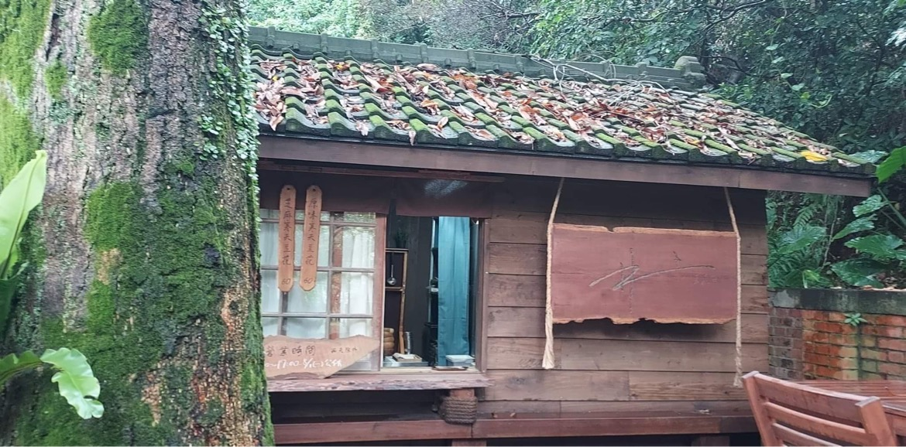
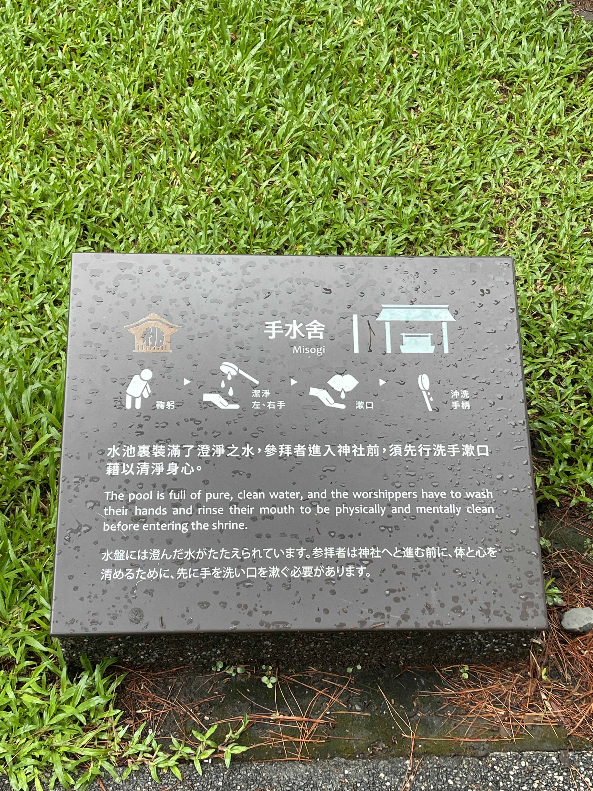
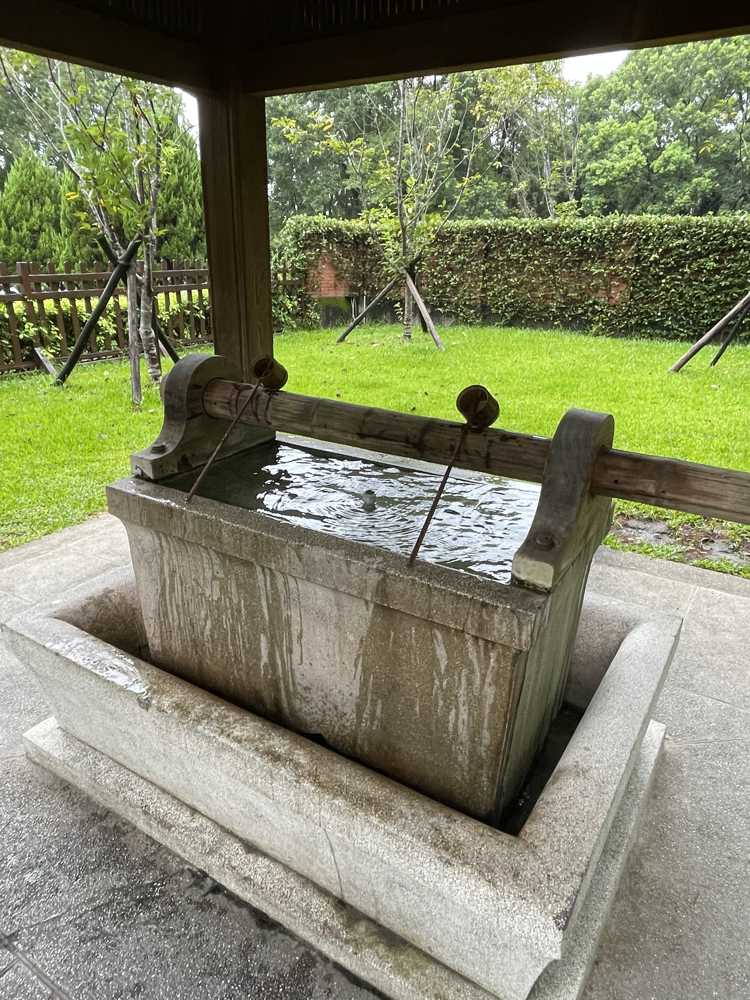
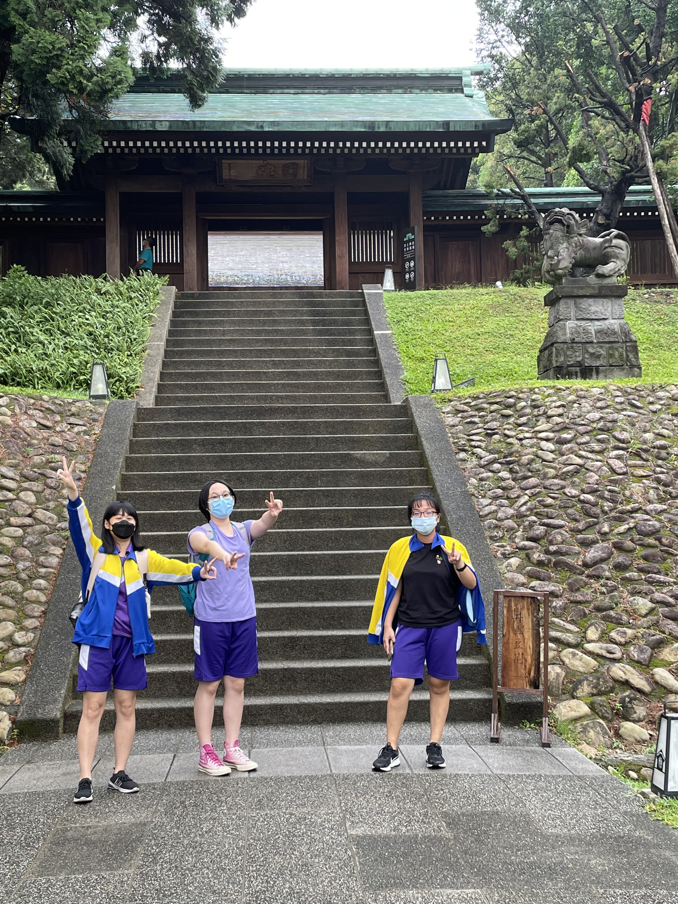

這裡是桃園忠烈祠暨神社文化園區
我其實不太懂忠烈祠與神社放在一起的概念
日治時代時日本政府在這裡建造了一座神社
後來民國時期的時候不知道哪個政府在說要在這裡再蓋一個忠烈祠紀念抗日勇士
然後把神社設立為文化保護園區
忠烈祠跟神社就在一起了
一邊紀念抗日戰士，一邊在供奉日本天照大神
感覺很怪，我不理解
不過沒關係，我只是普通觀光客
我來吃豆花跟看建築物

井上豆花
我覺得他蓋在這裡很有意境
感覺很像電影裡會有的森林裡的神奇店鋪

芝麻口味豆花
一碗50元，有芝麻、抹茶跟原味，很棒棒
我有用濾鏡，看得出來嗎

吃完豆花準備進去神社
進去前要先洗手手跟漱口
我們身上太髒了

這個神奇的東東是手水舍
要按照洗手手指引來洗手漱口

準備進入神社啦
我在階梯前幫他們拍照

前面就是忠烈祠了
裡面有許多抗日戰士，亮亮的燈應該就是光明燈了
裡面不能拍照，我就拍了他們進入前的背影
準備離開這裡
因為剛下完雨，所以鯉魚都纏在一起了
他們在幫鯉魚整理尾巴，好好笑
我用哀居濾鏡拍的，有閃亮亮的光點
好誒 掰掰